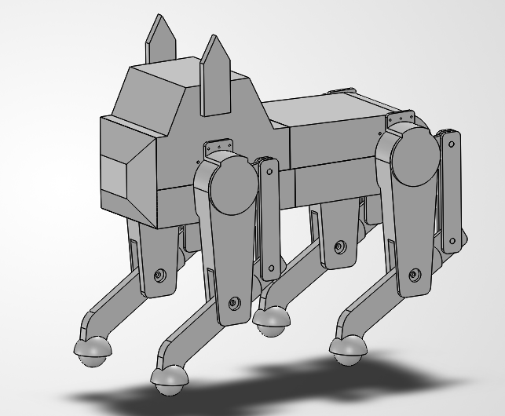

Leading the quadruped project at Purdue’s Humanoid Robot Club: a team-built robot dog, from leg concepts to simulation.

The quadruped is a team build inside Purdue's Humanoid Robot Club. The design, CAD and simulation work on this page is a collective effort — everyone on the project has worked to get the design and simulation off the ground.
I lead the project. I manage every subteam — mechanical, electronics and simulation — and own the engineering decisions that tie them together, from which leg concepts move forward to how the robot's hardware and software come together.
We're building a quadruped that can see a table or raised platform, judge where it is, and jump onto it. That means pairing onboard vision with legs that can deliver a huge burst of power and still land cleanly — a hard problem on both the perception and hardware side. We're testing spring-assisted and linkage-driven legs in MuJoCo to find the design that can make that jump. Work in progress.